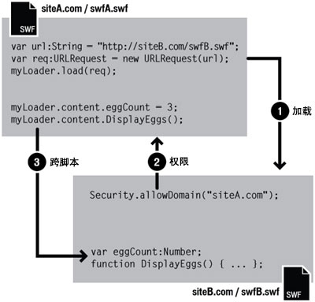

| 包 | flash.system |
| 类 | public final class Security |
| 继承 | Security |
| 语言版本: | ActionScript 3.0 |
| 运行时版本: | AIR 1.0, Flash Player 9, Flash Lite 4 |
 隐藏继承的公共属性
隐藏继承的公共属性 显示继承的公共属性
显示继承的公共属性| 属性 | 由以下参数定义 | ||
|---|---|---|---|
 | constructor : Object
对类对象或给定对象实例的构造函数的引用。 | Object | |
| exactSettings : Boolean [静态]
确定 Flash Player 或 AIR 如何选择用于某些内容设置的域，包括摄像头和麦克风权限、存储配额及永久共享对象存储的设置。 | Security | ||
| pageDomain : String [静态] [只读]
包含 SWF 的 HTML 页面的域部分。 | Security | ||
| sandboxType : String [静态] [只读]
表示其中正在运行执行调用的 文件的安全沙箱的类型。 | Security | ||
| 方法 | 由以下参数定义 | ||
|---|---|---|---|
[静态]
允许所标识的域中的 SWF 文件访问包含 allowDomain() 调用的 SWF 文件中的对象和变量。 | Security | ||
[静态]
允许所标识的域中的 SWF 文件和 HTML 文件访问执行调用的 SWF 文件（使用 HTTPS 协议承载）中的对象和变量。 | Security | ||
|
表示对象是否已经定义了指定的属性。 | Object | |
|
表示 Object 类的实例是否在指定为参数的对象的原型链中。 | Object | |
[静态]
在 url 参数指定的位置查找策略文件。 | Security | ||
|
表示指定的属性是否存在、是否可枚举。 | Object | |
|
设置循环操作动态属性的可用性。 | Object | |
[静态]
显示 Flash Player 中的“安全设置”面板。 | Security | ||
|
返回此对象的字符串表示形式，其格式设置遵守区域设置特定的约定。 | Object | |
|
返回指定对象的字符串表示形式。 | Object | |
|
返回指定对象的原始值。 | Object | |
| 常量 | 由以下参数定义 | ||
|---|---|---|---|
| APPLICATION : String = "application" [静态]
此文件正在 AIR 应用程序中运行，它是随该应用程序的包（AIR 文件）一起安装的。 | Security | ||
| LOCAL_TRUSTED : String = "localTrusted" [静态]
此文件是本地文件，并且用户已使用 Flash Player 设置管理器或 FlashPlayerTrust 配置文件将其设置为受信任的文件。 | Security | ||
| LOCAL_WITH_FILE : String = "localWithFile" [静态]
此文件是本地文件，尚未受到用户信任，它不是使用网络名称发布的 SWF 文件。 | Security | ||
| LOCAL_WITH_NETWORK : String = "localWithNetwork" [静态]
此文件是本地文件，尚未受到用户信任，它是使用网络名称发布的 SWF 文件。 | Security | ||
| REMOTE : String = "remote" [静态]
此 文件来自 Internet URL，并在基于域的沙箱规则下运行。 | Security | ||
exactSettings | 属性 |
exactSettings:Boolean| 语言版本: | ActionScript 3.0 |
| 运行时版本: | AIR 1.0, Flash Player 9, Flash Lite 4 |
确定 Flash Player 或 AIR 如何选择用于某些内容设置的域，包括摄像头和麦克风权限、存储配额及永久共享对象存储的设置。要让 SWF 文件使用的设置与在 Flash Player 6 中使用的设置相同，可以将 exactSettings 设置为 false。
在 Flash Player 6 中，为这些播放器设置使用的域基于 SWF 文件的域的末尾部分。如果 SWF 文件的域包含的段数超过两个，如 www.example.com，则会去除该域的第一段（“www”），并使用该域的剩余部分：example.com。因此，在 Flash Player 6 中，www.example.com 和 store.example.com 都使用 example.com 作为这些设置的域。同样，www.example.co.uk 和 store.example.co.uk 都使用 example.co.uk 作为这些设置的域。在 Flash Player 7 及更高版本中，默认情况下是根据 SWF 文件的精确域来选择播放器设置；例如，来自 www.example.com 的 SWF 文件将使用 www.example.com 的播放器设置，来自 store.example.com 的 SWF 文件将使用 store.example.com 的不同播放器设置。
当 Security.exactSettings 设置为 true 时，Flash Player 或 AIR 将为播放器设置使用精确域。exactSettings 的默认值是 true。如果将 exactSettings 更改为使用其他值而不是默认值，则应在要求 Flash Player 或 AIR 选择播放器设置的任何事件（例如，使用摄像头或麦克风，或者检索永久共享对象）发生之前执行此操作。
如果您以前发布了第 6 版 SWF 文件并从该文件创建了永久共享对象，并且现在您需要在将该 SWF 文件移植到第 7 版或更高版本后从该 SWF 文件中检索这些永久共享对象，或者从第 7 版或更高版本的其它 SWF 文件中检索这些永久对象，则需要在调用 SharedObject.getLocal() 之前将 Security.exactSettings 设置为 false。
实现
public static function get exactSettings():Boolean public static function set exactSettings(value:Boolean):void引发
SecurityError — Flash Player 或 AIR 在决定播放器设置时已至少使用了一次 exactSettings 的值。
|
pageDomain | 属性 |
sandboxType | 属性 |
sandboxType:String [只读] | 语言版本: | ActionScript 3.0 |
| 运行时版本: | AIR 1.0, Flash Player 9, Flash Lite 4 |
表示其中正在运行执行调用的 文件的安全沙箱的类型。
Security.sandboxType 具有下列值之一：
remote(Security.REMOTE)：此文件来自 Internet URL，并在基于域的沙箱规则下运行。localWithFile(Security.LOCAL_WITH_FILE)：此文件是本地文件，尚未受到用户信任，且不是使用网络名称进行发布的 SWF 文件。此 文件可以从本地数据源读取数据，但不能与 Internet 进行通信。localWithNetwork(Security.LOCAL_WITH_NETWORK)：此 SWF 文件是本地文件，尚未受到用户信任，且已使用网络名称进行发布。此 SWF 文件可与 Internet 通信，但不能从本地数据源读取数据。localTrusted(Security.LOCAL_TRUSTED)：此文件是本地文件，并且用户已经使用 Flash Player“设置管理器”或 FlashPlayerTrust 配置文件将其设置为受信任的文件。此 文件既可以从本地数据源读取数据，也可以与 Internet 进行通信。application(Security.APPLICATION)：此文件在 AIR 应用程序中运行，并且随该应用程序的包（AIR 文件）一起安装。默认情况下，AIR 应用程序沙箱中的文件可以跨脚本访问任何域中的任何文件（尽管不允许 AIR 应用程序沙箱以外的文件跨脚本访问 AIR 文件）。默认情况下，AIR 应用程序沙箱中的文件可以加载任何域中的内容和数据。
有关安全性的详细信息，请参阅 Flash Player 开发人员中心主题：安全性。
实现
public static function get sandboxType():String相关 API 元素
allowDomain | () | 方法 |
public static function allowDomain(... domains):void| 语言版本: | ActionScript 3.0 |
| 运行时版本: | AIR 1.0, Flash Player 9, Flash Lite 4 |
允许所标识的域中的 SWF 文件访问包含 allowDomain() 调用的 SWF 文件中的对象和变量。
注意：从 AIR 应用程序沙箱中的代码调用此方法会引发 SecurityError 异常。应用程序安全域以外的内容不能直接跨脚本访问应用程序沙箱中的内容。不过，应用程序沙箱以外的内容可以使用沙箱桥与应用程序安全沙箱中的内容进行通信。
如果两个 SWF 文件来自同一个域（例如，http://mysite.com/swfA.swf 和 http://mysite.com/swfB.swf），则 swfA.swf 可以检查和修改 swfB.swf 中的变量、对象、属性、方法等，而且 swfB.swf 也可以对 swfA.swf 执行同样的操作。这被称为跨影片脚本编写或跨脚本编写。
如果两个 SWF 文件来自不同的域（例如，http://siteA.com/swfA.swf 和 http://siteB.com/siteB.swf），则在默认情况下，Flash Player 既不允许 swfA.swf 编写 swfB.swf 的脚本，也不允许 swfB.swf 编写 swfA.swf 的脚本。通过调用 Security.allowDomain()，一个 SWF 文件可向其他域中的 SWF 文件授予权限。这称为跨域脚本编写。通过调用 Security.allowDomain("siteA.com")，siteB.swf 可授予 siteA.swf 编写其脚本的权限。
在任何跨域的情况下，明确所涉及的双方非常重要。为了便于进行此讨论，我们将执行跨脚本编写的一方称为访问方（通常是执行访问的 SWF），将另一方称为被访问方（通常是被访问的 SWF 文件）。当 siteA.swf 编写 siteB.swf 的脚本时，siteA.swf 是访问方，siteB.swf 是被访问方。

使用 allowDomain() 建立的跨域权限是不对称的。在上一个示例中，siteA.swf 可以编写 siteB.swf 的脚本，但 siteB.swf 无法编写 siteA.swf 的脚本，这是因为 siteA.swf 未调用 allowDomain() 来授予 siteB.com 中的 SWF 文件编写其脚本的权限。可以通过让两个 SWF 文件都调用 allowDomain() 来设置对称权限。
除了防止 SWF 文件受到其他 SWF 文件发起的跨域脚本编写影响外，Flash Player 还可防止 SWF 文件受到 HTML 文件发起的跨域脚本编写的影响。可以使用旧版本的 浏览器函数（如 SetVariable）或通过 ExternalInterface.addCallback() 创建的回调执行 HTML 到 SWF 的脚本编写。当 HTML 到 SWF 的脚本编写跨域时，被访问的 SWF 文件必须调用 allowDomain()（这与访问方是一个 SWF 文件时一样），否则操作将失败。
如果将 IP 地址指定为 allowDomain() 的参数，则不允许所有源自指定 IP 地址的访问方进行访问。相反，只允许 URL 中包含指定 IP 地址的访问方进行访问，而不是允许其域名映射到该 IP 地址的访问方进行访问。
特定于版本的差异
Flash Player 的跨域安全性规则随着版本的升级发生了演变。下表概述了这些差异。
| 涉及跨脚本编写的最新 SWF 版本 | 是否需要 allowDomain()？ | 是否需要 allowInsecureDomain()？ | 哪个 SWF 文件必须调用 allowDomain() 或 allowInsecureDomain()？ | 在 allowDomain() 或 allowInsecureDomain() 中可以指定哪些内容？ |
|---|---|---|---|---|
| 第 5 版或更低版本 | 无 | 无 | 不适用 | 不适用 |
| 6 | 是的，如果超级域不匹配 | 无 | 被访问的 SWF 文件，或者任何与被访问的 SWF 文件具有相同超级域的 SWF 文件 |
|
| 7 | 是的，如果域不是完全匹配 | 是的，如果执行 HTTP 到 HTTPS 的访问（即使域完全匹配） | 被访问的 SWF 文件，或者任何与被访问的 SWF 文件具有完全相同域的 SWF 文件 |
|
| 第 8 版或更高版本 | 是的，如果域不是完全匹配 | 是的，如果执行 HTTP 到 HTTPS 的访问（即使域完全匹配） | 被访问的 SWF 文件 |
|
控制 Flash Player 行为的版本是 SWF 版本（SWF 文件的发布版本），而不是 Flash Player 本身的版本。例如，当 Flash Player 8 正在播放为第 7 版发布的 SWF 文件时，它应用与第 7 版一致的行为。这种做法可确保播放器升级不会更改已部署 SWF 文件中的 Security.allowDomain() 的行为。
上表中的版本列显示了涉及跨脚本编写操作的最新 SWF 版本。Flash Player 根据执行访问的 SWF 文件的版本或被访问的 SWF 文件的版本（以两者中的较高版本为准）来确定其行为。
下面的段落提供有关涉及 Security.allowDomain() 的 Flash Player 安全性更改的详细信息。
第 5 版。没有跨域脚本编写限制。
第 6 版。引入了跨域脚本编写安全性。默认情况下，Flash Player 禁止跨域脚本编写；Security.allowDomain() 可允许跨域脚本编写。为了确定两个文件是否处于同一域中，Flash Player 将使用每个文件的超级域（即文件 URL 中的完全主机名，去掉第一段，最少剩两段）。例如，www.mysite.com 的超级域为 mysite.com。来自 www.mysite.com 和 store.mysite.com 的 SWF 文件无需调用 Security.allowDomain() 就可以相互编写脚本。
第 7 版。超级域匹配更改为域完全匹配。仅在这两个文件的 URL 中的主机名完全相同时才允许它们相互编写脚本；否则需要调用 Security.allowDomain()。默认情况下，不再允许从非 HTTPS URL 加载的文件编写从 HTTPS URL 加载的文件的脚本，即使这些文件从完全相同的域加载也是如此。由于非 HTTPS 文件容易在下载的过程中被修改，而经过恶意修改的非 HTTPS 文件能破坏 HTTPS 文件，此限制可防止这样的篡改，所以有助于保护 HTTPS 文件。引入了 Security.allowInsecureDomain() 以允许被访问的 HTTPS SWF 文件自主禁用此限制，但不鼓励使用 Security.allowInsecureDomain()。
第 8 版。主要有两项更改：
- 现在，只有被访问的 SWF 文件是调用
Security.allowDomain()的 SWF 文件时，调用Security.allowDomain()才允许跨脚本编写操作。也就是说，现在，调用Security.allowDomain()的 SWF 文件仅允许对其自身的访问。在以前的版本中，调用Security.allowDomain()允许跨脚本编写操作，其中被访问的 SWF 文件可以是与名为Security.allowDomain()的 SWF 文件在同一个域中的任何 SWF 文件。以前调用Security.allowDomain()会打开执行调用的 SWF 文件的整个域。 - 已添加了对具有
Security.allowDomain("*")和Security.allowInsecureDomain("*")的通配符值的支持。通配符 (*) 值允许跨脚本编写操作，操作过程中执行访问的文件可以是从任何位置加载的任何文件。将通配符视为全局权限。根据本地文件安全性规则，需要具有通配符权限才能启用特定类型的操作。具体而言，要使具有网络访问权限的本地 SWF 文件编写 Internet 上的 SWF 文件的脚本，被访问的 Internet SWF 文件必须调用Security.allowDomain("*")，从而反映本地 SWF 文件的来源是未知的。（如果该 Internet SWF 文件是从 HTTPS URL 加载的，则该 Internet SWF 文件必须改为调用Security.allowInsecureDomain("*")）。
有时您也可能遇到下面这种情况：您从另一个域中加载一个子级 SWF 文件，并想让该子级 SWF 文件编写父级 SWF 文件的脚本，但您不知道该子级 SWF 文件的最终域。例如，当您使用负载平衡重定向或第三方服务器时就可能发生这种情况。
在这种情况下，您可以使用您传递给 Loader.load() 的 URLRequest 对象的 url 属性。例如，如果将子级 SWF 文件加载到父级 SWF 中，则可以访问父级 SWF 的 Loader 对象的 contentLoaderInfo 属性：
Security.allowDomain(loader.contentLoaderInfo.url)
请务必等待，直至子级 SWF 文件开始加载，以便获得 url 属性的正确值。要确定子级 SWF 何时开始加载，请使用 progress 事件。
也可能出现相反的情况：即您可能创建一个子级 SWF 文件，并想要允许其父级编辑该子级 SWF 文件的脚本，但不知道该父级将来自哪个域。在这种情况下，可以访问作为该 SWF 根对象的显示对象的 loaderInfo 属性。在子级 SWF 中，调用 Security.allowDomain( this.root.loaderInfo.loaderURL)。您不必等待父级 SWF 文件加载；加载子级时，父级已加载完毕。
如果正在为 Flash Player 8 或更高版本进行发布，也可以通过调用 Security.allowDomain("*") 处理这些情况。不过，有时这可能是很危险的便捷手段，因为它允许来自任何域的任何其他 SWF 文件访问执行调用的 SWF 文件。通常，使用 _url 属性更安全。
有关安全性的详细信息，请参阅 Flash Player 开发人员中心主题：安全性。
参数
... domains — 一个或多个字符串或者 URLRequest 对象，它们可命名一些您希望允许从中进行访问的域。可指定特殊域“*”，以允许从所有域进行访问。
在 Flash Professional 中，为了从使用 Flash 创作工具中“本地播放安全性”选项的“只访问网络”发布的本地 SWF 文件访问非本地 SWF 文件，指定“*”是唯一的方法。 注意：通配符值在子域中不起作用。例如，不能在 |
引发
SecurityError — 从 AIR 应用程序安全沙箱中的代码调用此方法会引发 SecurityError 异常。应用程序安全沙箱以外的内容不能跨脚本访问应用程序安全沙箱中的内容。
|
相关 API 元素
allowInsecureDomain | () | 方法 |
public static function allowInsecureDomain(... domains):void| 语言版本: | ActionScript 3.0 |
| 运行时版本: | AIR 1.0, Flash Player 9, Flash Lite 4 |
允许所标识的域中的 SWF 文件和 HTML 文件访问执行调用的 SWF 文件（使用 HTTPS 协议承载）中的对象和变量。
Flash Player 提供 allowInsecureDomain() 以获得最佳的灵活性，但不建议调用此方法。通过 HTTPS 提供文件，可以为您和您的用户提供若干保护措施，而调用 allowInsecureDomain 会削弱这些保护措施之一。
注意：从 AIR 应用程序沙箱中的代码调用此方法会引发 SecurityError 异常。应用程序安全域以外的内容不能直接跨脚本访问应用程序沙箱中的内容。不过，应用程序沙箱以外的内容可以使用沙箱桥与应用程序安全沙箱中的内容进行通信。
此方法与 Security.allowDomain() 的工作方式相同，但是它还允许在使用非 HTTPS 协议加载访问方并使用 HTTPS 加载被访问方的情况下执行操作。在 Flash Player 7 及更高版本中，不允许非 HTTPS 文件编写 HTTPS 文件的脚本。当被访问的 HTTPS SWF 文件使用 allowInsecureDomain() 方法时，该方法可解除此限制。
仅使用 allowInsecureDomain() 启用从非 HTTPS 文件到 HTTPS 文件的脚本编写。如果执行访问的非 HTTPS 文件和被访问的 HTTPS 文件来自同一个域（例如，如果 http://mysite.com 上的 SWF 文件要编写 https://mysite.com 的 SWF 文件的脚本），请使用它启用脚本编写。请不要使用此方法在非 HTTPS 文件之间、HTTPS 文件之间或从 HTTPS 文件到非 HTTPS 文件启用脚本编写。对于那些情况，请改用 allowDomain()。
allowInsecureDomain() 时，它将如何削弱安全性。
请注意，下面的信息只是一种可能的情形，旨在通过一个具体的跨脚本编写示例来帮助您了解 allowInsecureDomain()。它没有涉及安全体系结构的所有问题，仅应用于背景信息。Flash Player 开发人员中心包含有关 Flash Player 和安全性的大量信息。有关详细信息，请参阅 Flash Player 开发人员中心主题：安全性。
假定您要创建一个电子商务站点，它由两个组件构成：一个是产品目录组件，它不必是安全的，因为它仅包含公共信息；另一个是购物车/结帐组件，它必须是安全的，以保护用户的财务信息和个人信息。假定您考虑从 http://mysite.com/catalog.swf 提供产品目录，从 https://mysite.com/cart.swf 提供购物车。对您站点的一个要求便是：第三方应不能通过利用您安全体系结构中的漏洞盗取用户的信用卡号码。
请设想：“中间方”攻击者在您的服务器和您的用户之间进行干预，试图盗取您的用户在购物车申请表中输入的信用卡号码。中间方是指这样的人员：对于在您的用户和服务器之间通过公共 Internet 传输的网络数据包，他能够进行查看或更改。例如，您的某些用户所使用的不道德的 ISP，或者，在用户工作区的怀有不良企图的管理员，都可能是中间方。这种情况并不罕见。
如果 cart.swf 使用 HTTPS 将信用卡信息传输到服务器，则中间方攻击者无法直接从网络数据包盗取此信息，因为 HTTPS 传输已加密。但是，攻击者可以使用其他技术：在您的 SWF 文件发送到用户时更改其中一个 SWF 文件的内容；将您的 SWF 文件替换为更改后的版本，此版本将用户的信息传输到由攻击者所有的其他服务器。
HTTPS 协议等可阻止此“修改”攻击发生作用，因为除了加密外，HTTPS 传输还是防篡改的。如果中间方攻击者更改数据包，则接收方将检测到更改并丢弃该数据包。因此在这种情况下，攻击者无法更改您的 cart.swf，因为它是通过 HTTPS 传递的。
不过，假设您希望允许 catalog.swf（通过 HTTP 提供）中的按钮将项目添加到 cart.swf（通过 HTTPS 提供）中的购物车，为实现此功能，cart.swf 调用 allowInsecureDomain()，这样 catalog.swf 就可以编写 cart.swf 的脚本。此操作会导致意外的后果：现在攻击者可以在用户最初下载 catalog.swf 时对它进行更改，这是因为 catalog.swf 是使用 HTTP 发送的，无法防止篡改。现在，攻击者更改过的 catalog.swf 可以编写 cart.swf 的脚本，因为 cart.swf 包含对 allowInsecureDomain() 的调用。已更改的 catalog.swf 文件可以使用 ActionScript 访问 cart.swf 中的变量，这样就可以读取用户的信用卡信息和其他敏感数据。然后，已更改的 catalog.swf 可以将此数据发送到攻击者的服务器。
显然，这是您所不愿看到的，但是您仍希望站点上两个 SWF 文件之间可以进行跨脚本编写。要重新设计此假设的电子商务站点，以避免 allowInsecureDomain()，可以采用下面两种可能的方法：
- 在应用程序中通过 HTTPS 提供所有 SWF 文件。这是目前为止最简单、最可靠的解决方案。在所述方案中，您将通过 HTTPS 提供 catalog.swf 和 cart.swf。当进行文件切换时（例如将 catalog.swf 从 HTTP 切换到 HTTPS 时），您可能发现占用的带宽和服务器 CPU 负载会稍微增大，您的用户可能发现应用程序加载时间稍长。您需要使用实际服务器进行试验，以确定这些影响的严重程度；通常它们分别不会超过 10-20%，而且有时它们根本不存在。通常，可以通过在服务器上使用 HTTPS 加速硬件或软件来改善效果。通过 HTTPS 提供所有协作 SWF 文件的主要好处是：您可以将 HTTPS URL 用作用户浏览器中的主 URL 而不会从浏览器生成任何混合内容的警告。此外，浏览器的挂锁图标将变为可见，为您的用户提供了公共的、受信任的安全性指示器。
- 使用 HTTPS 到 HTTP 的脚本编写，而不是 HTTP 到 HTTPS 的脚本编写。在所述的方案中，您可以将用户购物车的内容存储在 catalog.swf 中，并让 cart.swf 仅管理结帐流程。在结账时，cart.swf 可以从 catalog.swf 中的 ActionScript 变量中检索购物车内容。对 HTTP 到 HTTPS 的脚本编写的限制是不对称的；虽然无法安全地允许使用通过 HTTP 传送的 catalog.swf 文件编写使用 HTTPS 传送的 cart.swf 文件的脚本，但 HTTPS cart.swf 文件可以编写 HTTP catalog.swf 文件的脚本。此方法比所有 HTTPS 方法都容易受到攻击；您必须谨慎，不要信任通过 HTTP 传递的任何 SWF 文件，因为 HTTP 容易被篡改。例如，当 cart.swf 检索说明购物车内容的 ActionScript 变量时，cart.swf 中的 ActionScript 代码不能信任此变量的值是所需格式的。您必须确认购物车内容不包含可能导致 cart.swf 执行不期望的操作的无效数据。您还必须接受以下风险：中间方可能通过更改 catalog.swf 为 cart.swf 提供有效但不准确的数据（例如，通过在用户的购物车中放入项目）。通常的结帐流程都是通过显示购物车内容和总费用以待用户最终确认，可以在某种程度上缓解此风险，但是此风险仍然存在。
多年来，Web 浏览器一直强制将 HTTPS 文件和非 HTTPS 文件分开，以上所描述的情形正是此限制的一个很好的理由。Flash Player 为您提供了在绝对必须时避开此安全限制的能力，但在这样做之前一定要仔细考虑后果。
有关安全性的详细信息，请参阅 Flash Player 开发人员中心主题：安全性。
参数
... domains — 一个或多个字符串或者 URLRequest 对象，它们可命名一些您希望允许从中进行访问的域。可指定特殊域“*”，以允许从所有域进行访问。
为了从使用 Flash 创作工具中“本地播放安全性”设置（“文件”>“发布设置”>“Flash”选项卡）的“只访问网络”发布的本地 SWF 文件访问非本地 SWF 文件，指定“*”是唯一的方法。 注意：通配符值在子域中不起作用。例如，不能在 |
引发
SecurityError — 从 AIR 应用程序安全沙箱中的代码调用此方法会导致引发 SecurityError 异常。应用程序安全沙箱以外的内容不能跨脚本访问应用程序安全沙箱中的内容。
|
相关 API 元素
loadPolicyFile | () | 方法 |
public static function loadPolicyFile(url:String):void| 语言版本: | ActionScript 3.0 |
| 运行时版本: | AIR 1.0, Flash Player 9, Flash Lite 4 |
在 url 参数指定的位置查找策略文件。Adobe AIR 和 Flash Player 使用策略文件来确定是否允许应用程序从它们自己的服务器以外的服务器加载数据。请注意，虽然方法名称为 loadPolicyFile()，但是在发出需要策略文件的网络请求之前，实际并不加载此文件。
使用 Security.loadPolicyFile()，Flash Player 或 AIR 可以从任意位置加载策略文件，如下面的示例所示：
Security.loadPolicyFile("http://www.example.com/sub/dir/pf.xml");
这使 Flash Player 或 AIR 尝试从指定的 URL 检索策略文件。由该位置处的策略文件授予的任何权限将适用于该服务器虚拟目录层次结构中的同一级别或更低级别中的所有内容。
例如，如果在上一段代码之后添加下面的代码行，则这些代码行不会引发异常：
import flash.net.*;
var request:URLRequest = new URLRequest("http://www.example.com/sub/dir/vars.txt");
var loader:URLLoader = new URLLoader();
loader.load(request);
var loader2:URLLoader = new URLLoader();
var request2:URLRequest = new URLRequest("http://www.example.com/sub/dir/deep/vars2.txt");
loader2.load(request2);
但是，下面的代码则会引发安全性异常：
import flash.net.*;
var request3:URLRequest = new URLRequest("http://www.example.com/elsewhere/vars3.txt");
var loader3:URLLoader = new URLLoader();
loader3.load(request3);
您可以使用 loadPolicyFile() 加载任意数量的策略文件。在考虑需要策略文件的请求时，Flash Player 或 AIR 始终会等待策略文件下载完成后才会拒绝请求。如果由 loadPolicyFile() 指定的任何策略文件都未对请求进行授权，作为最终的后备操作，Flash Player 或 AIR 会查询原始的默认位置。
在检索主策略文件时，Flash Player 会用三秒钟等待服务器响应。如果未接收到响应，则 Flash Player 假定主策略文件不存在。但是，对 loadPolicyFile() 的调用没有默认超时值；Flash Player 假定调用的文件存在，在加载文件之前会一直等待。因此，如果要确保加载主策略文件，请使用 loadPolicyFile() 来明确调用主策略文件。
无法连接到常用的保留端口。有关已阻止的端口的完整列表，请参阅《ActionScript 3.0 开发人员指南》中的“限制网络 API”。
通过将 xmlsocket 协议与特定的端口号一起使用，您可以直接从 XMLSocket 服务器中检索策略文件，如以下示例所示。套接字连接不受上述的保留端口限制。
Security.loadPolicyFile("xmlsocket://foo.com:414");
这会导致 Flash Player 或 AIR 尝试从指定的主机和端口检索策略文件。使用指定的端口建立连接后，Flash Player 或 AIR 将传输 <policy-file-request />，并以 null 字节终止。服务器必须发送一个 null 字节来终止策略文件，并可以随后关闭该连接；如果服务器不关闭该连接，则 Flash Player 或 AIR 在收到终止 null 字节后也会这样做。
可以在包含 SWF 内容的 HTML 页中设置 object 和 embed 标签的 allowNetworking 参数，从而防止 SWF 文件使用此方法。
有关安全性的详细信息，请参阅 Flash Player 开发人员中心主题：安全性。
参数
url:String — 要加载的策略文件的 URL 位置。
|
showSettings | () | 方法 |
public static function showSettings(panel:String = "default"):void| 语言版本: | ActionScript 3.0 |
| 运行时版本: | AIR 1.0, Flash Player 9, Flash Lite 4 |
显示 Flash Player 中的“安全设置”面板。此方法不适用于 Adobe AIR 中的内容，在 AIR 应用程序中调用此方法不起作用。
参数
panel:String (default = "default")SecurityPanel.DEFAULT。
|
相关 API 元素
APPLICATION | 常量 |
public static const APPLICATION:String = "application"| 语言版本: | ActionScript 3.0 |
| 运行时版本: | AIR 1.0, Flash Lite 4 |
此文件正在 AIR 应用程序中运行，它是随该应用程序的包（AIR 文件）一起安装的。此内容包括在 AIR 应用程序资源目录中（安装应用程序内容的位置）。
相关 API 元素
LOCAL_TRUSTED | 常量 |
public static const LOCAL_TRUSTED:String = "localTrusted"| 语言版本: | ActionScript 3.0 |
| 运行时版本: | AIR 1.0, Flash Player 9, Flash Lite 4 |
此文件是本地文件，并且用户已使用 Flash Player 设置管理器或 FlashPlayerTrust 配置文件将其设置为受信任的文件。此 文件既可以从本地数据源读取数据，也可以与 Internet 进行通信。
相关 API 元素
LOCAL_WITH_FILE | 常量 |
public static const LOCAL_WITH_FILE:String = "localWithFile"| 语言版本: | ActionScript 3.0 |
| 运行时版本: | AIR 1.0, Flash Player 9, Flash Lite 4 |
此文件是本地文件，尚未受到用户信任，它不是使用网络名称发布的 SWF 文件。在 Adobe AIR 中，本地文件不 放在应用程序资源目录中，这些文件放在应用程序安全沙箱中。此 文件可以从本地数据源读取数据，但不能与 Internet 进行通信。
相关 API 元素
LOCAL_WITH_NETWORK | 常量 |
public static const LOCAL_WITH_NETWORK:String = "localWithNetwork"| 语言版本: | ActionScript 3.0 |
| 运行时版本: | AIR 1.0, Flash Player 9, Flash Lite 4 |
此文件是本地文件，尚未受到用户信任，它是使用网络名称发布的 SWF 文件。此 文件可与 Internet 通信，但不能从本地数据源读取数据。
相关 API 元素
REMOTE | 常量 |
public static const REMOTE:String = "remote"| 语言版本: | ActionScript 3.0 |
| 运行时版本: | AIR 1.0, Flash Player 9, Flash Lite 4 |
此 文件来自 Internet URL，并在基于域的沙箱规则下运行。
相关 API 元素
click 事件显示“Flash Player 设置”中的“本地存储设置”面板。使用 draw() 将一个橙色框添加到舞台上。在 draw() 中，通过指示 Flash Player 打开其“本地存储设置”面板，将 click 事件侦听器以名称 clickHandler() 添加进来，它对应于 click 事件。
package {
import flash.display.Sprite;
import flash.text.TextField;
import flash.events.*;
import flash.system.Security;
import flash.system.SecurityPanel;
public class SecurityExample extends Sprite {
private var bgColor:uint = 0xFFCC00;
private var size:uint = 100;
public function SecurityExample() {
draw();
}
private function draw():void {
var child:Sprite = new Sprite();
child.graphics.beginFill(bgColor);
child.graphics.drawRect(0, 0, size, size);
child.graphics.endFill();
child.buttonMode = true;
var label:TextField = new TextField();
label.text = "settings";
label.selectable = false;
label.mouseEnabled = false;
child.addChild(label);
child.addEventListener(MouseEvent.CLICK, clickHandler);
addChild(child);
}
private function clickHandler(event:MouseEvent):void {
Security.showSettings(SecurityPanel.LOCAL_STORAGE);
}
}
}
Tue Jun 12 2018, 11:04 AM Z